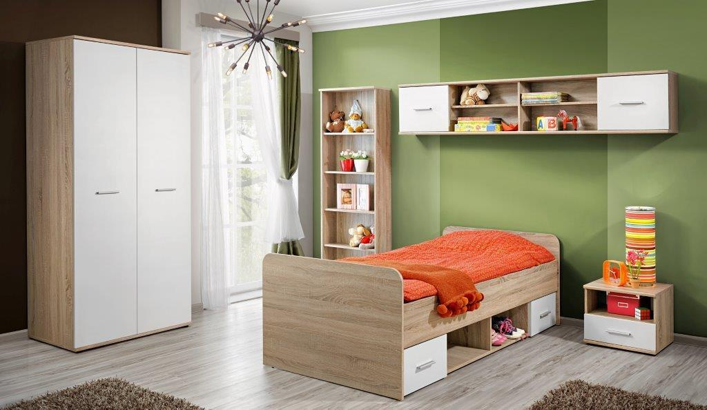

Baldai internetu su nemokamu pristatymu - CityBaldai.lt
 Pereiti prie meniu Pereiti prie turinio Mano paskyra Mano paskyra Krepšelis Norų sąrašas € 0.00 0 prekių Meniu Virtuvė Virtuvės ir Valgomojo Baldų Komplektai Virtuvės ir Valgomojo Kėdės Virtuvės ir Valgomojo Suolai Baro Kėdės ir stalai Vyno Lentynos Virtuvės spintelės Virtuvės ir Valgomojo Stalai Svetainė Visi svetaines baldai Svetainės baldų komplektai Supamosios Kėdės Sulankstomos Kėdės ir Taburetės Pramogų Centrai ir TV Stovai Bufetai ir spintelės Sieninės lentynos ir atbrailos Lentynos Pastatomos Lentynos ir Knygų Spintos Kavos Staliukai Žurnaliniai Staliukai Minkšti svetaines baldai Sofos Foteliai ir reglaineriai Foteliai be porankių Kėdės su atlošu Elektrinės Masažo Kėdės Pufai Sėdmaišiai Klasikiniai sėdmaišiai Miegamasis Miegamojo baldų komplektai Lovos ir Lovų Rėmai Grotelės lovai Čiužiniai Naktiniai Staliukai Kosmetiniai staliukai Vaikų kambarys Kūdikių ir Vaikų Lovelės Vaikiškos kėdės Prieškambaris Drabužių kabyklos Stovai ir Lentynos Avalynei Kabyklos Paltams ir Skrybėlėms Koridoriaus suoliukai Vonia Vonios baldų komplektai Vonios lentynėlės Vonios Kambario Aksesuarai Vonios Kilimėliai Rankšluosčių Laikikliai ir Pakabos Biuras Rašomieji Stalai Darbiniai stalai Ofiso Kėdės Dokumentų spintos Žaidimų kėdės Laukas Lauko Baldų Komplektai Lauko Kėdės Lauko Pufai Lauko Sofos Lauko Staliukai Lauko Suolai Lauko daiktadėžės Šezlongai Dekoras Šviestuvai Lubų Šviestuvai Sieniniai Šviestuvai Sietynai Lempos Figūrėlės ir skulptūros Plakatai, Nuotraukos ir Iliustracijos Virtuvė Virtuvės ir Valgomojo Baldų Komplektai Virtuvės ir Valgomojo Kėdės Virtuvės ir Valgomojo Suolai Baro Kėdės ir stalai Vyno Lentynos Virtuvės spintelės Virtuvės ir Valgomojo Stalai Svetainė Visi svetaines baldai Svetainės baldų komplektai Supamosios Kėdės Sulankstomos Kėdės ir Taburetės Pramogų Centrai ir TV Stovai Bufetai ir spintelės Sieninės lentynos ir atbrailos Lentynos Pastatomos Lentynos ir Knygų Spintos Kavos Staliukai Žurnaliniai Staliukai Minkšti svetaines baldai Sofos Foteliai ir reglaineriai Foteliai be porankių Kėdės su atlošu Elektrinės Masažo Kėdės Pufai Sėdmaišiai Klasikiniai sėdmaišiai Miegamasis Miegamojo baldų komplektai Lovos ir Lovų Rėmai Grotelės lovai Čiužiniai Naktiniai Staliukai Kosmetiniai staliukai Vaikų kambarys Kūdikių ir Vaikų Lovelės Vaikiškos kėdės Prieškambaris Drabužių kabyklos Stovai ir Lentynos Avalynei Kabyklos Paltams ir Skrybėlėms Koridoriaus suoliukai Vonia Vonios baldų komplektai Vonios lentynėlės Vonios Kambario Aksesuarai Vonios Kilimėliai Rankšluosčių Laikikliai ir Pakabos Biuras Rašomieji Stalai Darbiniai stalai Ofiso Kėdės Dokumentų spintos Žaidimų kėdės Laukas Lauko Baldų Komplektai Lauko Kėdės Lauko Pufai Lauko Sofos Lauko Staliukai Lauko Suolai Lauko daiktadėžės Šezlongai Dekoras Šviestuvai Lubų Šviestuvai Sieniniai Šviestuvai Sietynai Lempos Figūrėlės ir skulptūros Plakatai, Nuotraukos ir Iliustracijos
Baldai internetu
Citybaldai.lt Skandinaviško stiliaus baldaiVisada geros kainos Rinktis Stilius Modernus Tikslios formos, asimetrija ir
abstrakcija Rinktis stilius Industrinis Šiuolaikiniam interjerui
sukuria unikalią atmosferą Rinktis
NAUJOS PREKĖS
TENDENCIJOS PRODUKTAI
2 vnt., naktiniai staliukai, akacijos mediena, 40x30x58 cm
€ 120.06 Į krepšelįKavos staliukas, tikmedis ir derva, 100x50x40cm
€ 161.01 Į krepšelįKavos staliukas, masyvi akacijos mediena, 90x50x40cm
€ 111.50 Į krepšelįNaktiniai staliukai, 2vnt., tvirta akacijos med., 40x30x45cm
€ 141.50 Į krepšelįLauko baldai
Sofos
Toršerai
Dekoras
Kavos staliukai
Baro kėdės
NAUJI PASIŪLYMAI
YPATINGOS PREKĖS
Perdirbtos medienos staliukas su 3 lentynomis
€ 142.01 Į krepšelįStovas vynui, masyvi perdirbta mediena, 55x23x85cm
€ 99.05 Į krepšelįTV spintelė, masyvi perdirbta mediena, 120x30x40cm
€ 205.05 Į krepšelįTV spintelė, 100x30x45cm, mango medienos masyvas
€ 143.22 Į krepšelįSodo otomanė iš pal. su raud. sp. pag., žal. FSC mediena
€ 52.37 Į krepšelįPopuliarūs baldai
GERIAUSIAI PARDUODAMI
Vonios kilimėlis, akacijos mediena, 80 x 50 cm, mozaika
€ 34.31 Į krepšelįBaltas rašomasis stalas su 5 stalčiais
€ 194.07 Į krepšelįElegantiškas Lubų Šviestuvas, Sietynas, Juodas, 6 Lempučių
€ 58.98 Į krepšelįNauji baldai
NAUJI PRODUKTAI
Lauko terasos kėdė, akacijos medienos masyvas
€ 131.96 Į krepšelįTV spintelė, 120x35x45cm, mango medienos masyvas
€ 221.70 Į krepšelįTV spintelė, masyvi mango mediena, 140x30x45cm
€ 173.36 Į krepšelįNauji baldai
MANGO MEDIENA
TV spintelė, 100x30x45cm, mango medienos masyvas
€ 143.22 Į krepšelįTV spintelė, 120x30x40cm, mango medienos masyvas
€ 168.03 Į krepšelįTV spintelė, mango medienos masyvas, 140x30x45cm
€ 177.24 Į krepšelįPopuliariausi baldai
POPULIARIAUSIOS PREKĖS
Knygų spinta su 5 lent., mango mediena ir plienas, 60x30x180cm
€ 242.04 Į krepšelįValgomojo kėdė, tamsiai pilkos spalvos, audinys
€ 91.77 Į krepšelįValgomojo kėdės, 2 vnt., blizg. rudos sp., dirbt. oda, gembinės
€ 143.43 Į krepšelįNAUJIENOS
STRAIPSNIAI
5 Patarimai, kurie padės sukurti skandinaviško stiliaus interjerą.
Skandinaviškas stilius yra vienas iš populiariausių šiuolaikinių stilių. Šio stiliaus projektai yra paplitę visame pasaulyje, nuo Graikijos iki Argentinos.
Read moreKaip įrengti miegamąjį, kad netektų gailėtis.
Teko skaityti ne vieną autorių, kurie teigia, jog miegamasis yra svarbiausia namų vieta, nes jame ilsimės ir atgauname jėgas. Sutikčiau iš dalies. Miegamojo įrengimas, baldų, miegamojo lovos ir čiužinių kokybė yra labai svarbūs geram poilsiui, bet pats kambarys tikrai nenusipelno „namų centro“ titulo. Mažų mažiausiai todėl, kad tai nėra visos šeimos susibūrimo vieta, miegamasis ne tai, ką […]
Read moreKaip įrengti vaikų kambarį
Labai daug kas priklauso, ar kambarys „augs“ kartu su vaiku (vaikais), tai yra, ar ketinate, pavyzdžiui, vienos lyties mažylius palikti viename kambaryje ir ateityje.
Read morePRISTATYMAS 6-10 D.D.
Nemokamai visoje Lietuvoje!
PAGALBA TELEFONU
Susisiekitė 8 613 29001
NEPATIKO GRAŽINKITE
Pinigų grąžinimo garantija
PATOGUS APMOKĖJIMAS
Jums patogiausiu būdu
Pramonės g. 97, Vilnius, 11115 Tel.: +(370) 613 29001 Email: info@citybaldai.lt Įmonės kodas: 304426363 PVM kodas: LT100012645814 Apie mus Kas mes Garantijos Pristatymas Privatumo politika Kontaktai Kita informacija Apmokejimas Prekių grąžinimas Surinkimo paslaugos Straipsniai DUK Mano Citybaldai Mano paskyra Krepšelis Norų sąrašas Pirkimo taisyklės ir sąlygos © CityBaldai.lt 2020 Mano paskyra Ieškoti 0CityBaldai naudoja slapukus, kurie užtikrina sklandų apsipirkimą. Paspaudę „sutinku“ arba toliau tęsdami naršymą svetainėje Jūs sutinkate su slapukų naudojimu. Daugiau informacijos SUTINKU